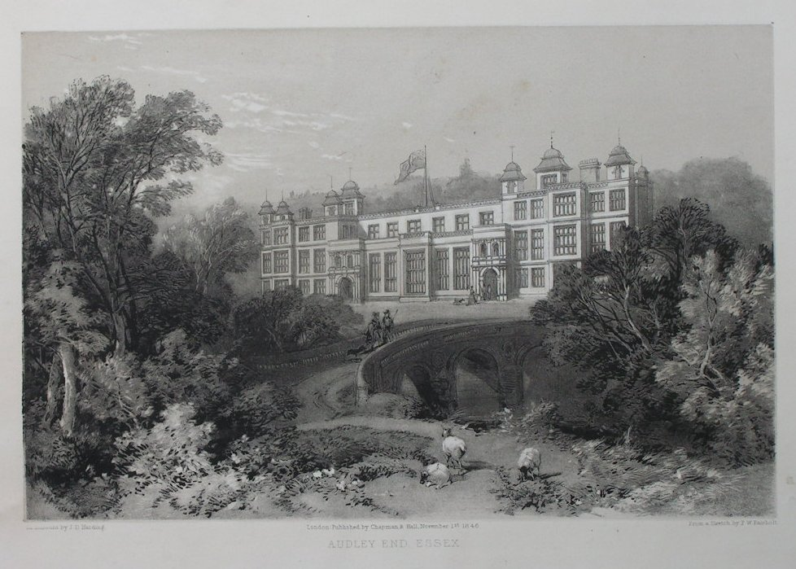
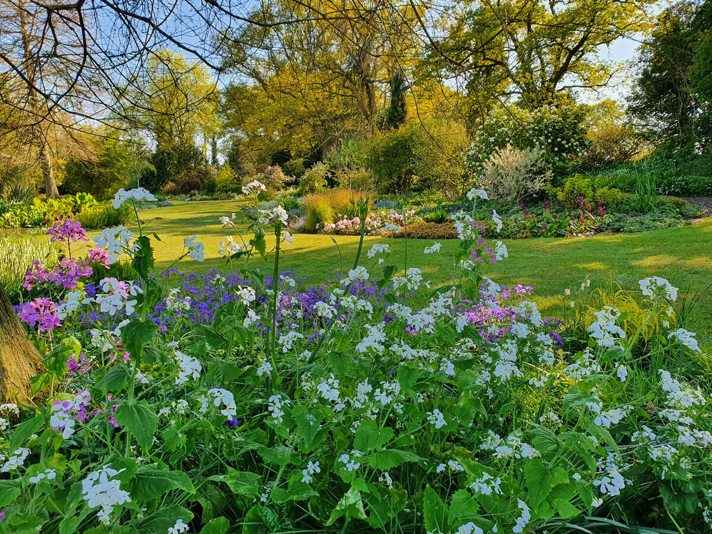
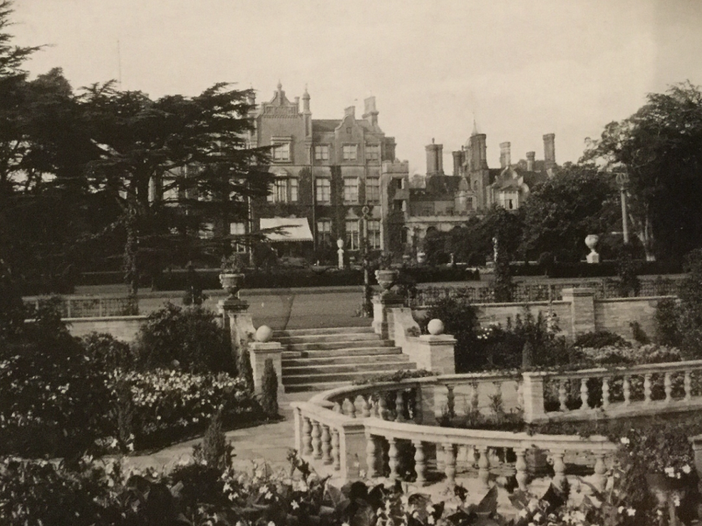

Audley House


A beautiful garden located in the heart of Essex.
Beth Chatto Garden


A stunning garden known for its beautiful plant combinations.
The Gardens of Easton Lodge


Gardens created by Countess of Warwick and designed by Harold Peto, the gardens were abandoned in 1950 and are now undergoing restoration.
RHS Hyde Hall Gardens

Dynamic hillside garden created in 1955 by the Robinsons and bequeathed to the RHS in 1993.